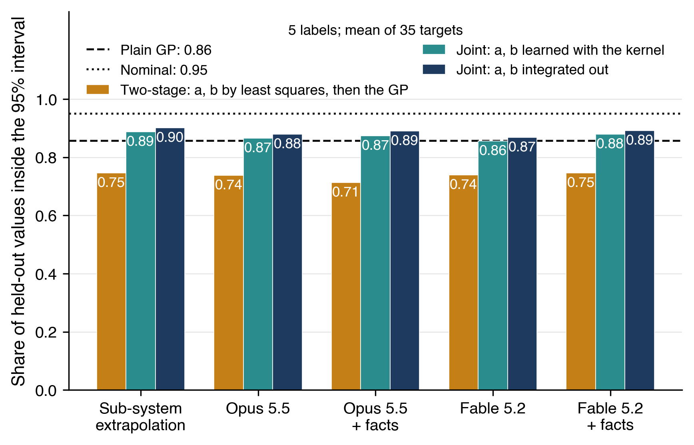

MATERIALS SCIENCE & ENGINEERING
TEXAS A&M UNIVERSITY
Department of Materials Science and Engineering
54

Coverage at 5 labels
plain GP: 0.86
two-stage fit: 0.71 to 0.75
a, b learned: 0.86 to 0.89
a, b integrated out: 0.87 to 0.90
nominal: 0.95